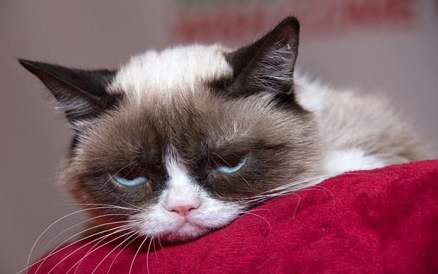

cats
The domestic cat[1][5] (Latin: Felis catus) or the feral cat[5][3] (Latin: Felis silvestris catus) is a small, typically furry, carnivorous mammal. They are often called house cats when kept as indoor pets or simply cats when there is no need to distinguish them from other felids and felines.[6] Cats are often valued by humans for companionship and for their ability to hunt vermin. There are more than 70 cat breeds; different associations proclaim different numbers according to their standards.


Ps. Cats make for some very popular memes